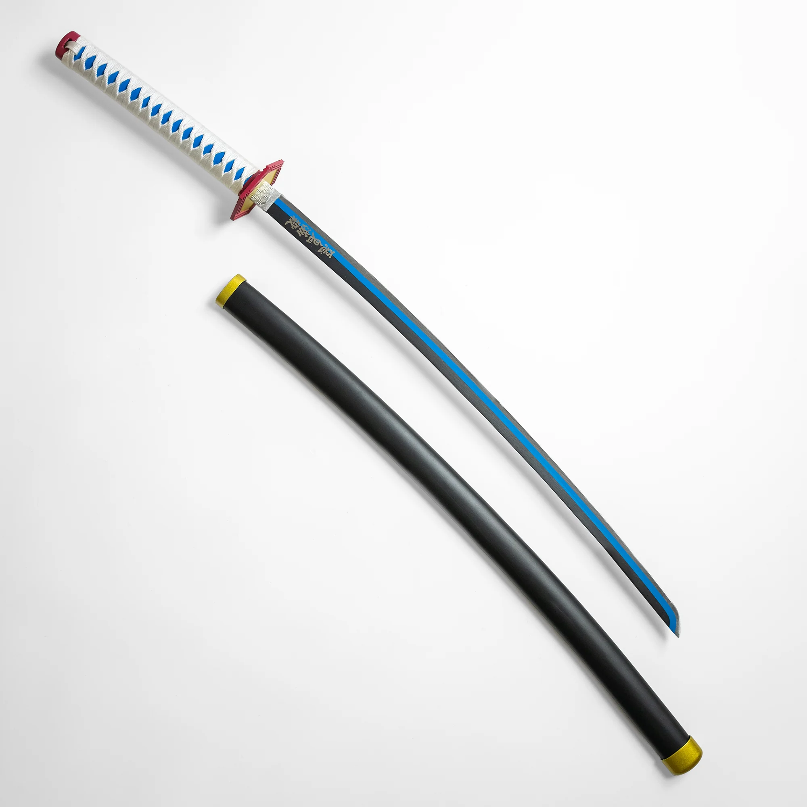
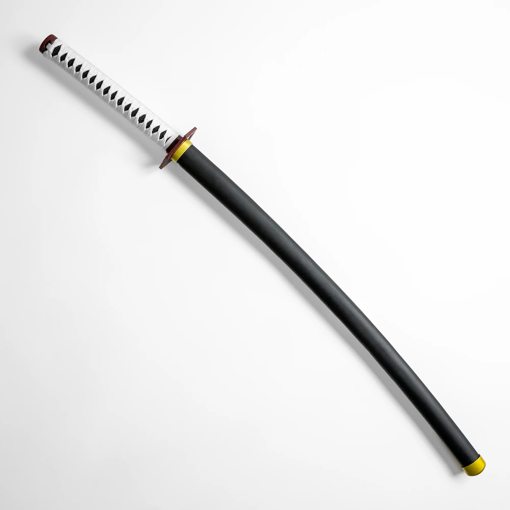
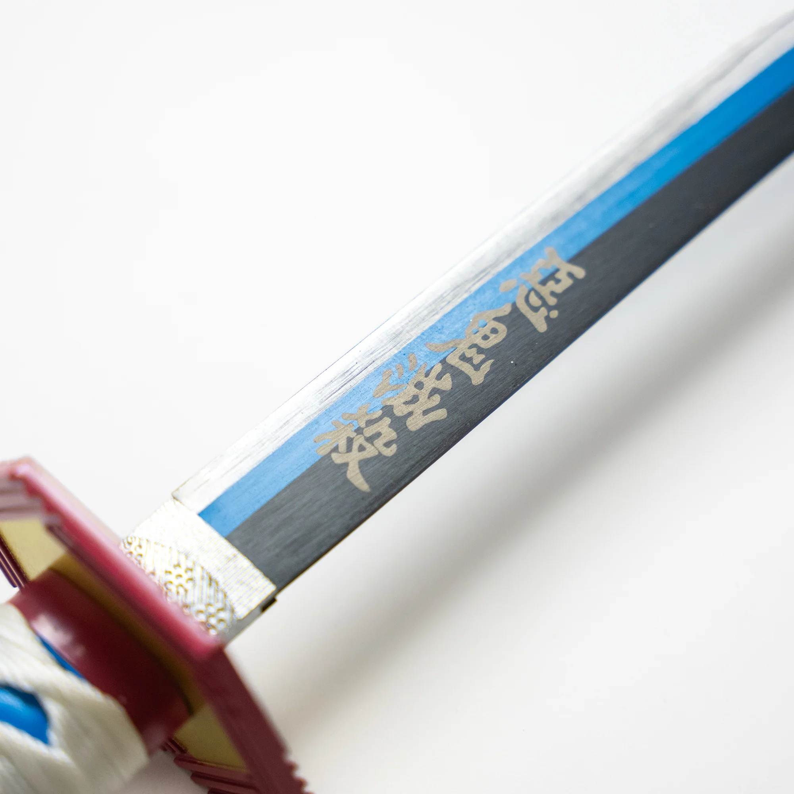

DEMON SLAYER
Katana de Giyu Tomioka
61,99 €
✔ En stock
- Expédition sous 48 h
- Retour possible sous 14 jours
- Livraison offerte dès 100 € d'achat
Une question ? Consultez notre livraison et retours.
Description
Réplique du katana de Giyu Tomioka, le Pilier de l'Eau de Demon Slayer. La lame bleue et la garde reprennent fidèlement le design de la série.
Livrée avec son fourreau, cette lame non affûtée est pensée pour l'exposition et le cosplay. Un incontournable pour les fans de l'Eau.
Caractéristiques
Longueur totale
101 cm
Longueur de lame
68,5 cm
Poids
1,2 kg
Matériau de la lame
Acier, non affûtée
Fourreau
Inclus, finition laqué
Usage
Collection, décoration, cosplay
Produits recommandés